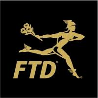

Our History
| 2019 | FTD was taken private when it was acquired by Nexus Capital Management |
| 2014 | FTD Companies, Inc. acquired Provide Commerce which includes ProFlowers, Shari's Berries, Personal Creations, Gifts.com, Cherry Moon Farms, ProPlants, Sincerely and Kalla. |
| 2013 | FTD is spun off from United Online resulting in FTD Companies, Inc. becoming an independent, publicly traded company listed on NASDAQ under the ticker symbol "FTD" |
| 2013 | Robert Apatoff is named President and CEO of FTD Companies, Inc. |
| 2012 | Interflora launched My Interflora Creation, a unique online tool for consumers to create their own bouquet |
| 2012 | Interflora acquired Flying Flowers and Flowers Direct in the U.K. |
| 2011 | FTD launched Mercury Connect, a hosted point of sale system making technology accessible for small and midsized florists |
| 2011 | FTD launched the FTD College Rose collection |
| 2010 | FTD celebrated its 100th anniversary |
| 2010 | FTD launched The Better Homes & Gardens collection by FTD |
| 2009 | FTD launched new product innovations including Good, Better, Best and The FTD Luxury Collection |
| 2009 | FTD launched a rich black and metallic gold logo and packaging to reflect the heritage of the iconic brand |
| 2008 | FTD was taken private when it was acquired by United Online, Inc. (NASDAQ: UNTD) |
| 2006 | FTD acquired Interflora (U.K. and Ireland) |
| 2005 | FTD became a publicly traded company on NYSE under the ticker symbol "FTD" |
| 2004 | FTD was taken private by Leonard Green & Partners, L.P. |
| 2003 | FTD launched the first Windows-based point of sale system to the florist network called FTD Mercury |
| 2002 | FTD completed a reverse merger with FTD.com pursuant to which FTD became publicly traded on NASDAQ under the ticker symbol "FTDI" |
| 1999 | FTD.com became a publicly traded company on NASDAQ under the ticker symbol "EFTD" |
| 1997 | FTD moved its headquarters to Downers Grove, IL from Southfield, MI |
| 1994 | FTD launched its first point of sale system to the florist network called Mercury Advantage |
| 1994 | FTD was acquired by Perry Capital Corporation from the florists and converted into a for-profit corporation |
| 1994 | FTD launched www.FTD.com |
| 1985 | FTD celebrated its 75th anniversary |
| 1984 | FTD launched the famous FTD® Pick Me Up Bouquet® which is still merchandised today |
| 1983 | NFL Hall-of-Famer Merlin Olsen was introduced as the FTD spokesperson |
| 1979 | FTD officially launched an electronic system to link the florists together called the Mercury Network on August 8, 1979 |
| 1973 | Interflora celebrated its 50th anniversary |
| 1965 | Florists' Telegraph Delivery changed its name to Florists' Transworld Delivery to reflect the growing international partnership with Interflora |
| 1962 | A three-month test was launched of a revolutionary plan for sending flower orders via a special telephone network - the initial roadmap for the Mercury Network |
| 1950s | Print advertising campaigns featured prominent entertainers including Kim Novak, Elizabeth Taylor, Dale Evans and Rosemary Clooney endorsing FTD and flowers |
| 1946 | International Telegraph Florists was established between FTD, the FTD British Unit and Europe's floral clearinghouse Fleurop, to sell flowers-by-wire all over the world; the group later became known as Interflora |
| 1946 | The floral industry's first test order program to assure quality and top performance from every FTD Florist began |
| 1933 | FTD entered its first float in the Rose Parade |
| 1929 | The Mercury Man logo was copyrighted as the official trademark for FTD |
| 1924 | FTD Clearinghouse was created as the first non-profit international banking operation in commercial history |
| 1923 | A British Unit of FTD was formed in response to the success of the network in America |
| 1914 | The iconic Mercury Man logo debuted |
| 1910 | FTD was founded in Rochester, NY by John A. Valentine |